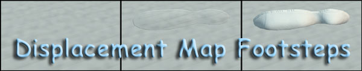
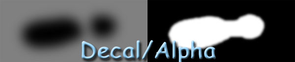
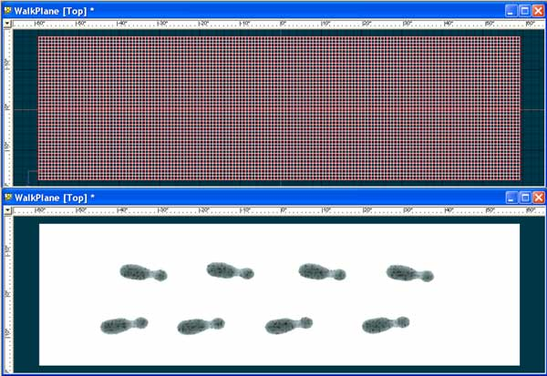
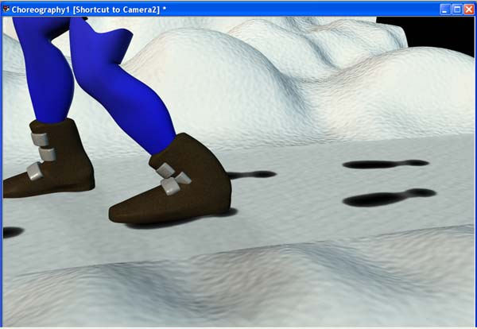
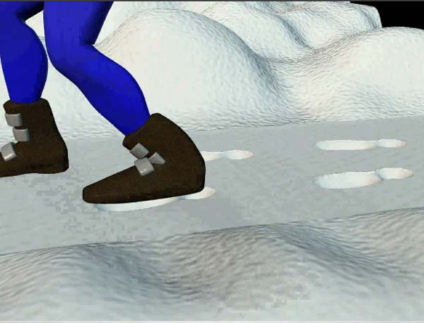
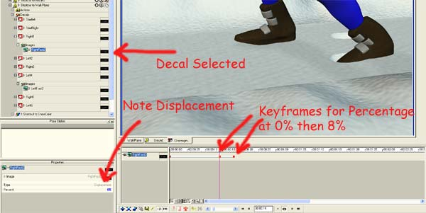

|  | ||||||||||||||||||
Tutorial: Footsteps in the Snowusing Animated Displacement DecalsSeptember 28th, 2002 |
||||||||||||||||||
The question came up on the list recently about how to make footsteps in the snow or dirt. This tutorial will show one way to do that. The basic solution uses a decal set to type displacement that animate the amount of displacement over time. Step 1: decalSimply create a left foot and right foot image that represent the footsteps we're going to create. Create it with an alpha map so we only affect the mesh where the footstep will be. Something like this: The footstep decalThis is sort of a left foot, so create another flipped for the right foot. Blur the decal and alpha so there is a decent transition from the 128/128/128 background gray (which means don't displace) to the 0/0/0 black representing the bottom of the footprint. Step 2: Decal the WalkPathThe WalkPlaneSince a displacement map requires more mesh density than what's required for bump maps, I created a 2cm square grid using the GridWizard for the length of my path. Then, I decaled separate steps for each step that we will animate. You might think to just move the stamp and re-stamp for each step. If you do that, you can't animate the displacement separately, which is what we want. Initially, let's leave the the decal type as color so we can see where we stamp. The result should look something like this: Step 3: Animate those feet!Now comes the fun. Throw the WalkPlane in to a chor along with your model that will make the footprints and, if you want, a some background for some joy. This is when you start to animate. In my case I positioned my model at time 0 with the feet on the first footsteps. Next I advanced to 00:00:15 and moved the right foot to the next step. Then 00:01:00 and place the left foot. And so on. Then go back in and add some intermediate keyframes so the feet don't slide horribly. But, when you play this, we still have no footsteps. Let's make those now. Step 4: Animating the DisplacementNow, back at time 0, let's change the Decal type for each step to Displacement and the amount to 0. Down in the choreography, open up the WalkPlane and the folder for the decals. Each decal should show a type of displacement and an amount of 0 at time 0. Change the percentage of Displacement for the first two decals/steps to 8% (your milesage may vary). This is because our feet are already placed at time 0. Now advance to time 00:00:14. This is just before our right foot hits the snow as it moves forward. Keyframe this at 0% again or our displacement will ramp between 0% at time 0 to 8% which we'll do next. This will cause the step to start before we want. Now advance to 00:00:18 or so. Change the displacement to 8%. This will cause the decal to displace from time 00:00:15 to 00:00:18, which is what we want. Now, move on to time 00:01:00 and keyframe the first left step to 0 and 8% at time 00:01:03. Repeat for each subsequent step, animating the displacement to correspond to the footfalls we keyframed earlier with our feet. Just continue this until done and you should be good to go. A Choreography ViewThis is just a view of the choreography while keyframing so you know what to expect to see. Click on it to see a larger version (105k). Some Notes:A couple things of note. I changed the interpolation method to linear for these keyframes so that the transitions would take place smoothly. Without this it defaults to spline which causes some overshoot that I don't want for this effect. The second thing to note is that displacement mapping takes lots more time to render than a simple bump. But for an effect like this, bump mapping really doesn't cut it. Plus don't forget the additional mesh density mentioned earlier. ConclusionsThat's it. One way to make footsteps in the snow, dirt or sand. Lots of things to fix in the animation but it should get the idea across. Feel free to download and pick apart the project. You'll find links to the animation and the project below. Please enjoy and as always, feedback good and bad is appreciated. Thanks, Darrin Mossor Downloads
|
||||||||||||||||||
| |
||||||||||||||||||
|
This document maintained by
webmaster@mossor.org. |
{kind=link}